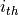
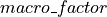
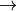
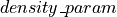
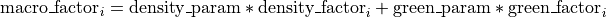
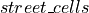
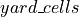

Model
The model is built on the objective of finding the “best” cells to place a TGC, that maximize a utility function. It is the composition of a macro factor and a micro factor, where only the last one is effectively influenced by the placement. For each cell

the function is defined as:

acts as a simple multiplicative factor. It is computed with the green space and the population density of the whole “area statistica” where the actual cell is. In particular, it increases proportionally with respect to the population density () and inversely with respect to the green space (). The impact of these two factors is weghted through a
and a , which span in the range [0, 1];


streets area inside the cell. With the parameter , we can regulate which pecentage of the street is available for the placement of a TGC;

yard area inside the cell. The placement of a TGC here is limited by the free space ( in the model) and its impact of the utility function is regulated by the parameter ;
number of yard_cells inside a cell. The higher it is, the more the yard area is fragmented and the lower is the utility;
amount of green area already present in the cell. The utility grows inversely to this value;
number of trees in the cell (same behavior as the green space).
All the elements in the utility function are normalized on the basis of their maximum value, in a way that each factor influces the utility equally.